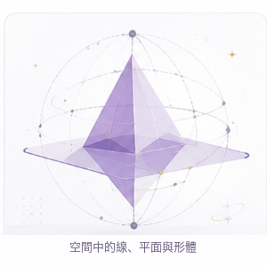
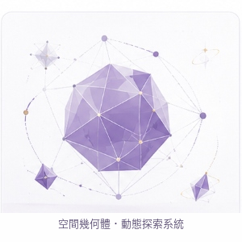
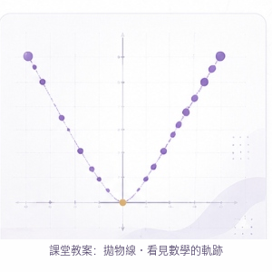
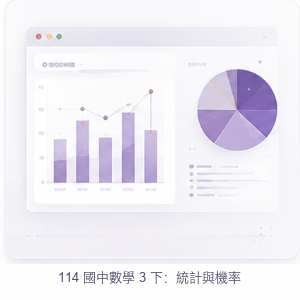
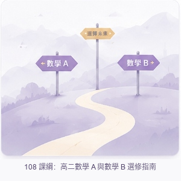

3-1 空間中的線、平面與形體
這款教學模組專為高中立體幾何單元打造，將抽象的空間概念轉化為具象的 3D 視覺互動體驗。設計理念核心在於「化繁為簡」，透過典雅乾淨的介面與直覺的操作，讓學生能自由旋轉、剖析幾何圖形，探索線與面之間的垂直與平行關係。有別於傳統平面的板書教學，本作品採用即時運算的動態模型，不僅大幅降低了學生的空間認知負荷，更激發了他們對幾何結構的好奇心與探索欲，真正實踐了「清晰設計成就更好學習」的核心願景。
View Project
以程式設計結合教學、美感與實用性，
展示教學模組、升學輔導工具與教師效率工具。


這款教學模組專為高中立體幾何單元打造，將抽象的空間概念轉化為具象的 3D 視覺互動體驗。設計理念核心在於「化繁為簡」，透過典雅乾淨的介面與直覺的操作，讓學生能自由旋轉、剖析幾何圖形，探索線與面之間的垂直與平行關係。有別於傳統平面的板書教學，本作品採用即時運算的動態模型，不僅大幅降低了學生的空間認知負荷，更激發了他們對幾何結構的好奇心與探索欲，真正實踐了「清晰設計成就更好學習」的核心願景。
View Project
本系統致力於打造一個開放式的幾何探究沙盒，讓學習者能沉浸於動態的幾何建構過程中。設計上延續了極簡美學與水晶幾何的視覺語彙，不僅介面賞心悅目，更提供了豐富的參數調節功能。使用者可以即時觀察點、線、面在三維空間中的變化軌跡，深刻理解幾何定理的推導過程。其設計理念旨在打破制式化的解題框架，賦予學生主動探索的權力，培養其嚴謹的邏輯思維與空間想像力，是一套兼具美感與深度的數位教育工具。
View Project
本教案將抽象的二次函數與拋物線軌跡，轉化為肉眼可見的視覺動態展演。設計理念著重於「數學的視覺化美學」，透過精準的座標系點陣圖與平滑的曲線動態，引導學生觀察參數變化對拋物線開口與頂點的影響。我們刻意濾除了多餘的視覺干擾，保留了純粹的點、線與網格，讓每一次的參數調整都能帶來直覺的視覺反饋。這不僅降低了代數學習的門檻，更讓學生能真切地「看見」隱藏在公式背後的數學規律與軌跡之美。
View Project
專為新課綱設計的統計與機率教學平台，將繁雜的數據化為清晰易讀的視覺圖表。在設計上，我們採用了現代 Dashboard 的儀表板概念，以典雅的紫灰色調搭配直覺的長條圖與圓餅圖組件，打破傳統數學教材枯燥的排版。學生不僅能快速掌握資料分布特徵，還能透過互動介面親自操作數據，理解機率的隨機性與統計意義。這套模組完美詮釋了「以設計輔助認知」，讓原本生硬的數據分析課程變得充滿現代感與探索樂趣。
View Project
為了幫助高中生在面對 108 課綱的分流時不再迷惘，本指南以「探索未來路徑」為核心隱喻進行設計。視覺上運用了充滿希望感的漸層紫金山丘與道路分岔路標，柔和地傳遞出「選擇」的意象。介面內整合了數A與數B的核心差異、未來科系對應及學習策略，並透過流暢的引導式問答，協助學生釐清自身志向。這不僅是一份資訊型指南，更是一個能安定學生焦慮、陪伴他們勇敢邁向未來學術旅程的數位輔導夥伴。
View Project這是一款專為第一線教育工作者量身打造的實用效率工具。設計理念源於對教師日常繁瑣行政工作的體貼，旨在用最直覺的數位介面解決代導費用的計算痛點。我們將複雜的計費邏輯隱藏於極簡優雅的表單背後，教師只需輸入基本資訊，系統便能快速、精準地產出費用明細，並支援匯出與紀錄管理功能。整體風格摒棄了傳統系統的生硬感，以清新的留白與細緻的微互動，帶來愉悅的使用體驗，讓教師能將更多寶貴時間回歸於教學本身。
View Project